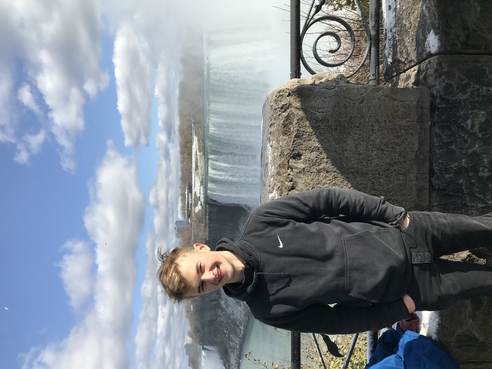

I'm an undergraduate student studying Physics, CS and Neuroscience at the University of Toronto. When I'm not cramming for finals, I like to program.
This website contains extended documentation on my favorite projects I've worked on throughout my programming quests.
I like programming in Python and am a devoted follower of the Python philosophies, but I'm familiar with other languages as well. Here's a list of what I have learned in life: Java/Python Object Oriented Programming, PHP, JavaScript, SQL, Linux, Android Development, speaking Russian